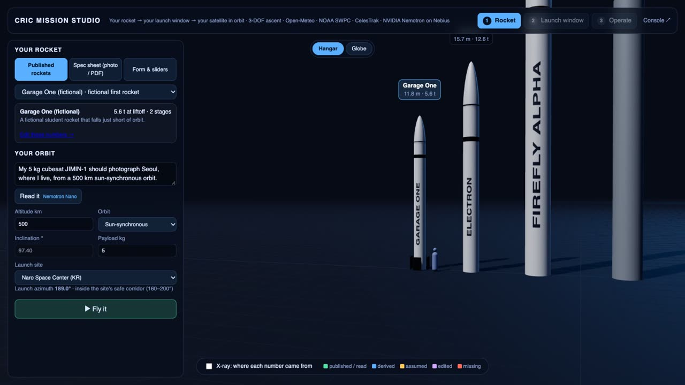
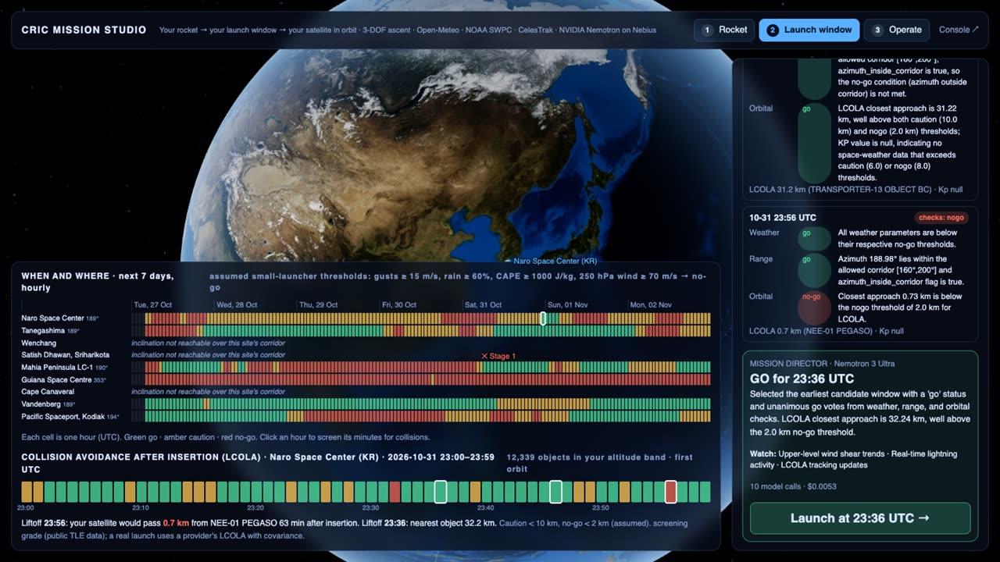
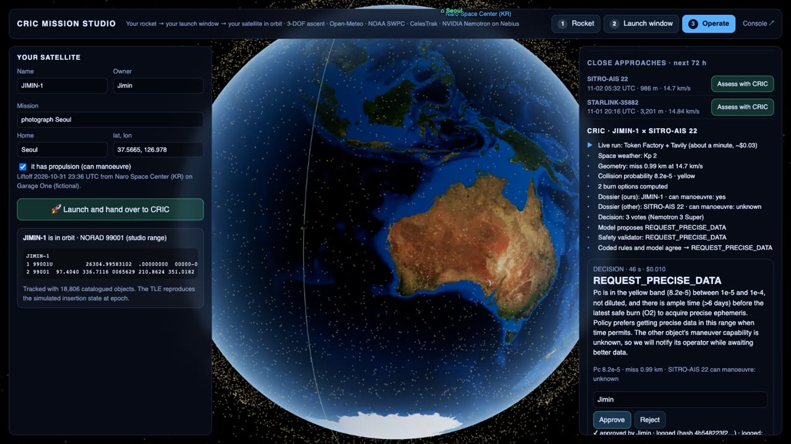

Bring a rocket and a satellite. CRIC tells you whether it reaches orbit and what to change if it does not, when and where to launch around weather and other satellites, and then operates the satellite among 18,806 tracked objects, with an AI that does the work and knows when to ask a person.

Pick a published launcher, drop a spec sheet photo, or type your own numbers. A 3-DOF ascent flies it; if it falls short, every suggested fix is flown again before you see it.

Seven days of weather and space weather for every site that can reach the orbit, then each liftoff minute screened against the catalog. One minute can pass a satellite at under a kilometre; a few minutes later is clear.

The satellite joins the catalog. CRIC tells you when it passes over home, screens it for close approaches, and runs the same decision pipeline as the console, ending with your approval.
| Nemotron | What it does | What stops it going wrong |
|---|---|---|
| 3 Nano | Turns “my 5 kg cubesat, 500 km sun-synchronous, I live in Seoul” into a target | Inclination computed in code |
| 3.5 Super VL | Reads spec sheets and the team's screenshots | Every number labelled; gaps filled with stated defaults |
| 3 Super | Explains a failed flight; launch-team votes; conjunction decisions (3 votes) | Fixes come from the simulator; a second route in code must agree |
| 3 Ultra | Mission director's launch brief; escalation briefs for a person | Cannot pick a window a check or vote vetoed |